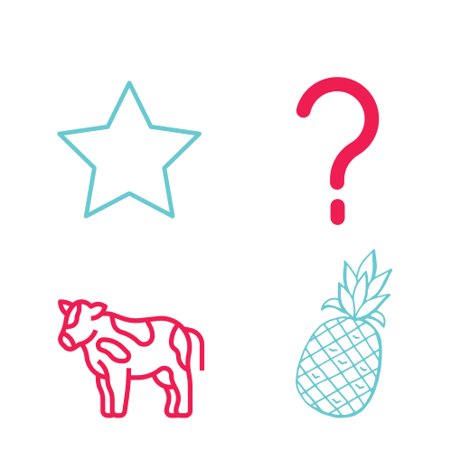

Matriz BCG
A Matriz BCG é uma análise gráfica baseada no conceito de ciclo de vida do produto, classificando os produtos que estão dando certo, outros que têm potencial para maiores vendas e aqueles para serem abandonados.
A Matriz BCG é uma análise gráfica desenvolvida por Bruce Henderson para a empresa de consultoria empresarial americana Boston Consulting Group em 1970.
vantagens na empresa
podemos dizer que a matriz BCG oferece maior vantagem competitiva para a empresa, já que esse método também possibilita a análise do cenário dos concorrentes em relação aos seus produtos.
como montar a matriz
O primeiro passo para montar a matriz BCG é desenhar os 2 eixos perpendiculares, com sua interseção ficando exatamente no meio do gráfico eixo horizontal representa a participação relativa no mercado, que diminui da esquerda para a direita. Assim, produtos localizados na primeira metade do quadro são aqueles com maior participação no mercado em relação à sua área, enquanto os da direita são aqueles com pouca penetração.
- quadrante superior direito= estrelas
- quadrante inferior direto= vacas leiteiras
- quadrante superior esquerdo= interrogações
- quadrante inferior esquerdo= abacaxis